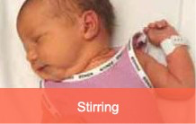
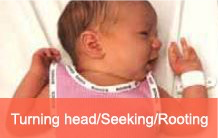
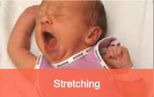

Hungry and fullness signs
Learning your baby's hungry and fullness signs is an important first step for understanding and looking after your baby. By learning and feeding in response to these signs, you're allowing your baby to feed according to their own appetite (rather than your schedule). As a bonus, you should also gain confidence in recognising your baby's communication, which can reduce the stress that can come with dealing with a crying baby!
Hungry signs
Babies can show they are hungry in a number of ways. Rather than feeding on a schedule or by the clock, it is recommended that you feed in response to your baby's hungry signs - also called 'demand feeding' or 'feeding on demand'.
This video shows what hungry signs look like in real babies.
Video: Hungry signs
Sourced from the Raising Children website, Australia's trusted parenting website. For more parenting information, visit raisingchildren.net.au.
These images show what early, active and late signs of hunger look like in a baby.
Early signs of hunger
Stirring, stretching, sucking on lips/tongue/hands/fingers/toes/toys/clothing, increased alertness, squeaking, light fussing.
 Active signs of hunger
Turning towards your breast or bottle, trying to position for nursing, pulling on your clothes, fidgeting, squirming, breathing fast, fussing.


Late signs of hunger
Moving head frantically from side-to-side, fussing, crying.


Adapted with permission from the Royal Brisbane and Women's Hospital Baby feeding cues (signs), Queensland Health.
Remember:
- it is best to feed your baby when you see early signs of hunger
- your baby knows how much and when they need to feed - it is best to let your baby feed as needed rather than pressuring your baby into a specific schedule
Fullness signs
Some signs your baby may be full or taking a break include when your baby:
- stops sucking
- closes their mouth
- turns away from the nipple or bottle
This is a good time to burp your baby and wait a minute before offering your breast or the bottle again. If your baby resists again, they are full.